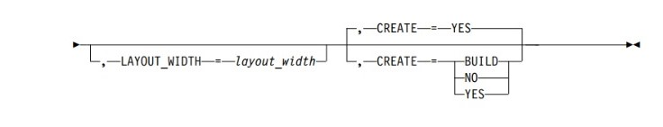
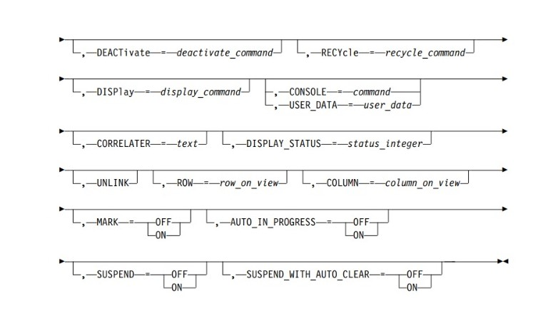
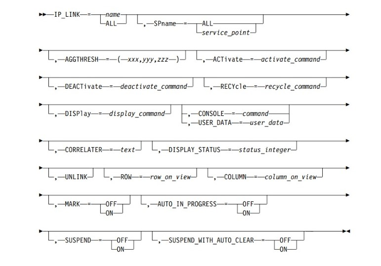
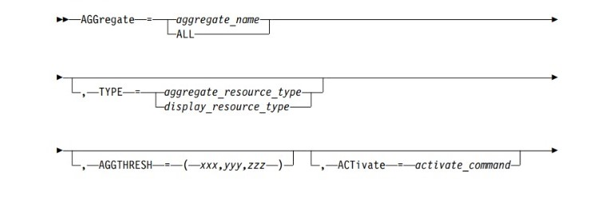

- A control statement separated into multiple statements with the break occurring after a keyword=value. This is done by coding a comma after the keyword=value and continuing with the remaining parameters on the next statements. For example:
- A control statement separated into multiple statements with the break occurring anywhere in the coding. (This type of continuation is required when an entire keyword=value cannot be coded on one statement). The break can occur in the middle of a keyword or value by coding the following characters: ||,. For example:
- NetView DSIPARM member
- Fully qualified cataloged data set
- A REXX stem array, which is collected in a MLWTO and passed to BLDVIEWS using the NetView PIPE command
- AGGCHILD (All resources except for NONSNA, AGG, CLUSTER, and MultiSystem Manager TCP/IP resources)
- All APPNTAM resources except for nnDomainNetworkCluster
- All SNA topology manager resources
- IPSPname
- SNA
- SNA_DOMAIN
- CONSOLE
- CORRELATER (NetView V1R3 and above)
- DISPLAY_NAME
- DOMAIN
- Generic Commands (ACTIVATE, DEACTIVATE, RECYCLE, DISPLAY)
- OTHER_DATA
- USER_DATA
- AGGPRI
- AGGTHRESH
- COLUMN
- CONSOLE
- CORRELATERDISPLAY_NAME
- DISPLAY_NAME
- DISPLAY_STATUS
- OTHER_DATA
- ROW
- TYPE
- UNLINK
- USER_DATA
- User Status
- MARK
- AUTO_IN_PROGRESS
- SUSPEND
- SUSPEND_WITH_AUTO_CLEAR
- Generic Commands:
- ACTIVATE
- DEACTIVATE
- DISPLAY
- RECYCLE
- ThresholdDegraded (status color is yellow)
- ThresholdSeverelyDegraded (status color is pink)ThresholdUnsatisfactory (status color is red)
- ThresholdUnsatisfactory (status color is red)
To specify a threshold value as a percentage, prefix or suffix the number with a %. BLDVIEWS multiplies it by the total number of real resources linked to the aggregate to come up with the threshold.
To specify a threshold value as an actual number, prefix or suffix the number with a #. If the specified threshold is larger than the total number of real resources beneath the aggregate, then the threshold is set to the total number of real resources beneath the aggregate.
You can mix actual values and percentages in the AGGTHRESH keyword.
- If resources are added or deleted from an aggregate object after BLDVIEWS is run, it is necessary to rerun BLDVIEWS to readjust the thresholds.
- The COLUMN keyword is only supported if specified on a resource control statement that follows a view control statement with a layout type of 9 (grid).
- ROW must be specified if COLUMN is specified.
- You can set Remote Console support for any object which has the DisplayResourceUserData field defined.
- BLDVIEWS envelopes the specified command with the appropriate control information that is required for the command to be run correctly. The command must be specified either with a fully qualified name (drive and path) or the PATH must be set so the command can be located.
- CONSOLE is mutually exclusive with USER_DATA
- BLDVIEWS provides control variables that can be coded anywhere in the command text. The variables are:
- IP_HOST
- INTERFACE
- BLDVIEWS enables the following NetView variables to be coded anywhere in the command text:
- Single quotation marks (') or double quotation marks (") can be used as a delimiter.
- Single quotation marks (') or double quotation marks (") can be used as a delimiter.
- This function cannot be used if Remote Console support is used, because they occupy the DisplayResourceUserData field in RODM.
- Mark
- Automation in progress
- Suspend
- Current Status (DisplayStatusCommandText)
- Activate (ActivateCommandText)
- Inactivate (DeactivateCommandText)
- Recycle (RecycleCommandText)
- For MultiSystem Manager token ring resources, BLDVIEWS appends the commands with an operator ID of FLCVBLDV and a unique correlator value.
- BLDVIEWS provides the following control variables that can be coded anywhere in the command text:
- IP_HOST
- INTERFACE
- BLDVIEWS enables the following NetView variables to be coded anywhere in the command text:
- BLDVIEWS enables the following NetView variables to be coded anywhere in the command text:
- Single quotation marks (') or double quotation marks (") can be used as a delimiter.
- LANSPname
- IPSPname
- If you code control statements with a name of ALL or a resource name, the resources that get processed depend on whether a service point control statement was previously specified.
- If no prior service point statement was specified and a resource control statement was coded with ALL for a resource name, all resources are processed.
- If no prior service point statement was specified and a resource control statement was coded with a wild card resource name, all resources that match the wild card name are processed.
- If a prior service point statement was specified and a resource control statement was coded with ALL for a resource name, all resources managed by that service point are processed.
- v If a prior service point statement was specified and a resource control statement was coded with a wild card resource name, all resources that match the wild card name, and are managed by that service point, are processed.
- VTAM Major Node (MAJNODE control statement)
- CDRMs (CDRM control statement)
- CDRSCs (CDRSC control statement)
- Logical Units (LU control statement)
- Logical Unit Groups (LU_GROUP control statement)
- 6 - hierarchical (default for CREATE=YES)
- 7 - ellipse
- 9 - grid
- 6 - hierarchical (default for CREATE=YES)
- 7 - ellipse
- 9 - grid
- 1 - Radial Layout by link type (default for CREATE=YES)
- 6 - hierarchical
- 7 - ellipse
- 9 - grid
- 1 - Radial Layout by link type (default for CREATE=YES)
- 6 - hierarchical
- 7 - ellipse
- 9 - grid
- 1 - Radial Layout by link type (default for CREATE=YES)
- 6 - hierarchical
- 7 - ellipse
- 9 - grid
- 1 - Radial Layout by link type (default for CREATE=YES)
- 6 - hierarchical
- 7 - ellipse
- 9 - grid
- Nickname
- Computer name (physical name found in IBMLAN.INI file)
- Mac address
- IPX address
- snaNetID.snaNodeName.tgn{.adj_snaNetID}.adj_snaNodeName
- snaNetID.vrnNodeName.tgn{.adj_snaNetID}.adj_snaNodeName
- snaNetID.snaNodeName.tgn{.adj_snaNetID}.adj_vrnNodeName
- STATION_ADAPTER
- IP_CLUSTER
- IP_NETWORK
- IP_SUBNET
- IP_LOCATION
- INTERFACE
- SYSTEM
- NONSNA
- APPN_CLUSTER
- APPN_NETWORK
- SNALOCALTOPO
- NNODE
- ENODE
- LNODE
- LINE
- SNA_PORT
- DOMAIN
- LLINK
- TG
- APPN_VRN
- APPN_TG_CIRCUIT
- INTER_DOMAIN_CIRCUIT
- INTER_SUBNETWORK_CIRCUIT
- CN_CIRCUITNTRI_CIRCUIT
- NTRI_CIRCUIT
- SUBAREA_TG_CIRCUIT
- AGG
- APPL_MAJNODE
- CDRSC_MAJNODE
- CDRM_MAJNODE
- LAN_MAJNODE
- LCLNONSNA_MAJNODE
- LOCALSNA_MAJNODE
- LUGROUP_MAJNODE
- NCP_MAJNODE
- PACKET_MAJNODE
- SWITCHED_MAJNODE
- TRL_MAJNODE
- XCA_MAJNODE
- HOST_NODEIC_NODE
- IC_NODE
- MIG_DATA_HOST
- GW_NCP
- NCP_GW
- NCP_NON_GW
- CDRM
- CDRSC
- PU
- LU
- LU_GROUP
- CA_MAJNODE
- Network views
- Configuration peer views
- Configuration backbone views
- Exception views
- A graphic example
- Advantages and disadvantages
- An explanation of how each layout type is affected by the GMFHS fields that it uses
- Radial layout for clustering by link (see Figure 161 on page 674)
- Radial layout for user-defined clusters by cluster ID (see Figure 161 on page 674)
- Radial layout for broadband networks (see Figure 161 on page 674)
- Radial layout for token-ring networks (see Figure 162 on page 674)
- Radial layout for local area networks (see Figure 163 on page 674)
- Radial layout for local area networks with a central bus (see Figure 164 on page 675)
- Elliptical layout with a single ellipse (see Figure 165 on page 675)
- Hierarchical layout (see Figure 166 on page 675)
- Connectivity tree layout (see Figure 167 on page 676)
- Grid layout for exception, configuration, and network views (see Figure 168 on page 676)
- BinPackingFlag
- BusNode
- ClusterIDValue
- DefaultRowSpacing
- EllipseAspectRatioHeight
- EllipseAspectRatioWidth
- FirstNode
- HierarchicalPriority
- LayoutOrientation
- LayoutSequence
- LayoutType
- LayoutWidth
- LinkCrossOptionValue
- ResourceLayoutCharacteristics
- RootNode
- SecondNode
IP_SUBNET
Specifies TCP/IP subnetwork aggregate resources.
IPSPname
Specifies the VTAM PU, LU, or CP name for the service point that manages the resources on the control statements that follow it.
LCVIEW
Defines a configuration logical connectivity view, which contains the resources on the control statements that follow it.
LINE
Specifies VTAM lines.
LLINK
Specifies logical links.
LNODE
Specifies APPN len nodes
LU
Specifies VTAM logical units.
LU_GROUP
Specifies VTAM logical unit groups.
MAJNODE
Specifies VTAM major nodes.
MDLVIEW
Defines a more detailed logical view, which contains the resources on the control statements that follow it.
MDPVIEW
Defines a more detailed physical view, which contains the resources on the control statements that follow it.
MIG_DATA_HOST
Specifies Migration Data Hosts.
NCP
Specifies NCP resources.
NETWORK
Specifies the MultiSystem Manager or APPNTAM network aggregate resource.
NNODE
Specifies APPN network nodes.
NONSNA
Specifies Non-SNA (GMFHS managed real) resources.
OTHER
Specifies a resource from a user-created or MultiSystem Manager open class.
PCVIEW
Defines a configuration physical connectivity view, which contains the resources on the control statements that follow it.
PU
Specifies VTAM physical units.
PVIEW
Defines a configuration peer view, which contains the resources on the control statements that follow it.
SNA
Specifies VTAM SNA shadow resources.
SNA_DOMAIN
Specifies the global VTAM domain which owns the resources on the control statements that follow it.
SNA_PORT
Specifies the SNA port.
SNALOCALTOPO
Specifies the APPN SNA local topology resources.
SYSTEM
Specifies system aggregate resources.
TG
Specifies APPN transmission groups.
VIEW
Defines a network view, which contains the resources on the control statements that follow it.
VRN
Specifies APPN virtual routing nodes.
WILDCARD
Defines wildcard characters to use when coding wild card names on the control statements.
Control Statement Syntax
BLDVIEWS control statements have a free-form syntax which uses keywords and values. You can start coding in any column. Leading and trailing blanks are ignored. A specific control statement can span 1 or more lines. Two types of continuation are available:


The statements are concatenated and the characters are removed.
Note: The RODM Collection Manager interpreter supports the use of double equal signs (==) to distinguish between using MyName-based names or DisplayResourceName-based names as they appear on a view. For example, the following control statement creates a view and adds an object based on its DisplayResourceName:
Control statements can be coded in the following items:
Note: You can use z/OS system symbolics in control statements processed by BLDVIEWS.
Keywords can be specified in any case (upper, lower or mixed) and they can be abbreviated. The abbreviated syntax is denoted in uppercase letters defined on each control statement.
If the control statements are coded in a NetView DSIPARM member or a fully qualified data set, the maximum length of each record is 80 characters. Columns 73-80 are ignored. If the control statements are passed to BLDVIEWS using the NetView PIPE command, there is no limit to the size of the records and no columns are ignored
The following resource names are always translated to upper case:
For all other resource names, code them in the same case, because that is how they are displayed by NetView management console or by the various element managers.
Keyword values can be coded in mixed case. In some instances the values are respected and in other instances the values are translated to upper case. The values for the following keywords are not translated to upper case:
Comments can be used, but only on separate statements. Code a comment statement by coding an * in column 1.
* NETA NCPs
NCP=NETA*
When you want to link resources to a view, code a VIEW statement followed by the resource statements that you want linked to the view.
VIEW=NEWVIEW,CREATE=YES
IP_ROUTER=rtr1.company.com
IP_ROUTER=rtr2.company.com
When you want to link resources to an aggregate, code an AGGregate statement followed by the AGGChild resource statements that you want linked to the aggregate.
AGGREGATE=NEWAGG,CREATE=YES
AGGCHILD=rtr1.company.com,type=IP_ROUTER
AGGCHILD=rtr2.company.com,type=IP_ROUTER
Common Control Statement Parameters
The following parameters are common to many of the BLDVIEWS control statements and are documented here and referenced later in the documentation by the control statements that support them:
AGGPRI: Description
The AGGPRI keyword is used to set or change the aggregation priority for real resources. The aggregation priority is the number of levels of aggregate resources whose status immediately changes to degraded when the real resource becomes unsatisfactory (regardless of aggregation threshold values). Use this to give higher priority to critical resources.
Syntax
AGGPRI=x
-2 Use the DisplayResourceType default value
-1 Do not aggregate
0 Aggregate, but immediately degrade 0 levels
1 Immediately degrade 1 level
2 Immediately degrade 2 levels
3 Immediately degrade 3 levels
4 Immediately degrade 4 levels
5 Immediately degrade 5 levels
6 Immediately degrade 6 levels
7 Immediately degrade 7 levels
8 Immediately degrade 8 levels
9 Immediately degrade 9 levels
Example
AGGPRI=2
AGGTHRESH: Description
The AGGTHRESH keyword is used to set the aggregation thresholds for aggregate resources. The aggregation thresholds are used to determine when the status of aggregates are changed to reflect the status of the underlying resources. There are three aggregation thresholds:
Thresholds are specified on aggregate resources and are the minimum number of unsatisfactory, real resources underneath the aggregate which cause the aggregate to change status.
If you specify percentages, BLDVIEWS queries the TotalRealResourceCount field of the aggregate and multiplies it by the specified percentages to calculate the new values for the thresholds.
Syntax
AGGTHRESH=(xxx,yyy,zzz)
xxx 1-3 digit ThresholdDegraded
yyy 1-3 digit ThresholdSeverelyDegraded
zzz 1-3 digit ThresholdUnsatisfactory
Example
AGGTHRESH=(10#,25%,75%)
Usage Notes
COLUMN:
Description
When building a grid view (layout type of 9), you can specify the specific column on the screen where you want a resource to be placed. The COLUMN keyword is used to specify the column.
Syntax
COLUMN=column_on_screen
Example
COLUMN=3
Usage Notes
CONSOLE:
Description
With remote console support, you can click on a resource and then issue a command, such as TELNET, or remotely log on to a resource. Although this is referred to as remote console support, any command can be specified. The command runs on the NetView management console workstation. BLDVIEWS envelopes the specified command with RemoteConsole = # and # and then sets the DisplayResourceUserData field. The user only has to specify the command.
You can set the remote console field for any resource in RODM that has the DisplayResourceUserData field defined. See the IBM Tivoli NetView for z/OS User's Guide: NetView Management Console for more information.
Syntax
CONSOLE=’command’
Example
CONSOLE=’TELNET.EXE %name%’
Usage Notes
%NAME%
Is substituted with the name of the resource. This variable is supported for all resources.
%RANDOM%
Is substituted with a 1-5 digit random number. This variable is supported for all resources.
%SEGMENT%
Is substituted with the segment number where the resource resides.
This variable is supported only for the resources that are identified by the following control statements:
%IPADDRESS%
Is substituted with the internet address of the resource.
netid()
VTAM network identifier
domain()
Current® NetView domain
opid()
NetView operator or task ID
cursys()
Current operating system name
ecvtpseq()
Level of operating system
vtam()
VTAM version and release
netview()
NetView version and release
mvslevel()
z/OS version and release
opsystem()
Type of operating system
sysplex()
Name of the MVS sysplex
Correlater:
Description
The CORRELATER keyword is used to set the Correlater field for an object.
BLDVIEWS enables the following NetView variables to be coded anywhere in the correlater text:
netid()
VTAM network identifier
domain()
Current® NetView domain
opid()
NetView operator or task ID
cursys()
Current operating system name
ecvtpseq()
Level of operating system
vtam()
VTAM version and release
netview()
NetView version and release
mvslevel()
MVS version and release
opsystem()
Type of operating system
sysplex()
Name of the MVS sysplex
Syntax
CORRELATER='USA VA RICHMOND'
CORRELATER=’text’
Usage Notes
Single quotation marks (') or double quotation marks (") can be used as a delimiter.
DISPLAY_NAME:
Description
Set the DisplayResourceName field for resources coded on SNA, NONSNA and AGGREGATE statements. The DisplayResourceName field is used to define a more descriptive and useful name to the resources. DisplayResourceName, if defined for a resource, is displayed on the workstation instead of the actual RODM name (MyName) of the resource.
Use the BLDVIEWS substitution variable %NAME% as part of the new DisplayResourceName value. The %NAME% variable is substituted with the name of the resource. You can use this to reformat the names of multiple resources at once with one control statement. You can prefix or suffix the names with additional text.
Syntax
DISPLAY_NAME=xxx
Example
DISPLAY_NAME=NCP_1
DISPLAY_STATUS:
Description
The DISPLAY_STATUS keyword is used to set the status of an object.
Syntax
DISPLAY_STATUS=xxx
129 Satisfactory
144 Medium satisfactory
145 Low satisfactory
130 Unsatisfactory
160 Medium unsatisfactory
161 Low unsatisfactory
131 Intermediate
132 Unknown
133 Degraded
134 Severely degraded
136-143 User status
152-159 User status
Example
DISPLAY_STATUS=130
Usage Notes
Display status value 131 is not supported for aggregate objects.
Display status values 133 and 134 are not supported for real objects.
OTHER_DATA:
Description
The OTHER_DATA keyword is used to set the RODM DisplayResourceOtherData field for an object. The DisplayResourceOtherData field can be set to any value. The value in this field is displayed in the NetView management console Data1 field.
Syntax
OTHER_DATA=’other_data’
Example
OTHER_DATA=’Call 1-800-IBM-HELP for support’
Usage Notes
BLDVIEWS enables the following NetView variables to be coded anywhere in the other data text. The variables are:
netid()
VTAM network identifier
domain()
Current® NetView domain
opid()
NetView operator or task ID
cursys()
Current operating system name
vtam()
VTAM version and release
netview()
NetView version and release
mvslevel()
MVS version and release
opsystem()
Type of operating system
sysplex()
Name of the MVS sysplex
Single quotation marks (') or double quotation marks (") can be used as a delimiter.
ROW:
Description
When building a hierarchical view (layout type of 6) or a grid view (layout type of 9), you can specify the specific row on the screen where you want a resource to be placed. Use the ROW keyword to specify the row on a screen where you want a resource to be positioned.
The ROW keyword is only supported if specified on a resource control statement that follows a view control statement with a layout type of 6 (hierarchical) or 9 (grid).
Syntax
ROW=row_on_screen
Example
ROW=2
UNLINK:
Description
Use the UNLINK keyword to remove a resource from a view or from an aggregate object without having to delete the view or aggregate and rebuild them.
Syntax
Syntax: UNLINK
Example
View=myview
Agg=myagg,unlink
USER_DATA:
Description
The USER_DATA keyword is used to set the DisplayResourceUserData field for an object. The contents of this field is displayed in the NetView management console Data2 field. You can set the User Data field for any resource which has the DisplayResourceUserData field defined, and you can set the DisplayResourceUserData field to any value.
BLDVIEWS enables the following NetView variables to be coded anywhere in the user data text. The variables are:
netid()
VTAM network identifier
domain()
Current® NetView domain
opid()
NetView operator or task ID
cursys()
Current operating system name
vtam()
VTAM version and release
netview()
NetView version and release
mvslevel()
MVS version and release
opsystem()
Type of operating system
sysplex()
Name of the MVS sysplex
Syntax
Syntax: USER_DATA=’user_data’
Example
USER_DATA=Call x45108 for support
Usage Notes
User Statuses:
Description
Use the following user status keywords to set the corresponding bits in the UserStatus field:
The MARK keyword is used to set or clear the mark bit in the UserStatus field for any resource which has the UserStatus field defined. The resource must already exist in RODM. If you want to create an object, you must first code the control statements to create the resource and then code the control statements to update the resource.
The AUTO_IN_PROGRESS keyword is used to set or clear the Automation in Progress bit in the UserStatus field for any resource in RODM that has the UserStatus field defined. The resource must already exist in RODM. If you want to create an object, you must first code the control statements to create the resource and then code the control statements to update the resource.
The SUSPEND and SUSPEND_WITH_AUTO_CLEAR keywords can be used to set the Suspend bit in the UserStatus field for any resource in RODM that has the UserStatus field defined. The resource must already exist in RODM. If you want to create an object, you must first code the control statements to create the resource and then code the control statements to update the resource.
Setting the suspend User status flag disables the resource from aggregation and participation in exception views. If you set the Suspend bit in the UserStatus field with the SUSPEND_WITH_AUTO_CLEAR keyword, GMFHS automatically clears the Suspend bit when the resource returns to a satisfactory state. If you set the Suspend bit in the UserStatus field with the SUSPEND keyword, you must manually clear the Suspend bit from NetView management console or use BLDVIEWS.
The state of the UserStatus bits can be displayed in the Resource Information pop-up window.
Generic Commands:
Description
BLDVIEWS can be used to set generic commands for objects. With the NetView management console generic commands function, a NetView management console operator can select a resource and issue one of the following generic commands:
The actual command to be issued is retrieved from fields on the object. For example, the command text for the Activate command is retrieved from the ActivateCommandText field.
Syntax
ACTivate=’activate_command’
DEACTivate’=deactivate_command’
RECYcle=’recycle_command’
DISPlay=’display_command’
Example
ACTIVATE=’BRG LINK NAME=%NAME%’
DISPLAY=BRG QUERY NAME=%NAME%
Usage Notes
%NAME%
Substituted with the name of the resource. This variable is supported for all resources.
%RANDOM%
Substituted with a 1-5 digit random number. This variable is supported for all resources.
%SEGMENT%
Substituted with the segment number where the resource resides. This variable is supported only for the resources that are identified by the following control statements:
%IPADDRESS%
Substituted with the internet address of the resource. This variable is only supported for the NWSERVER control statement.
netid()
VTAM network identifier
domain()
Current® NetView domain
opid()
NetView operator or task ID
cursys()
Current operating system name
vtam()
VTAM version and release
netview()
NetView version and release
mvslevel()
MVS version and release
opsystem()
Type of operating system
sysplex()
Name of the MVS sysplex
netid()
VTAM network identifier
domain()
Current® NetView domain
opid()
NetView operator or task ID
cursys()
Current operating system name
vtam()
VTAM version and release
netview()
NetView version and release
mvslevel()
MVS version and release
opsystem()
Type of operating system
sysplex()
Name of the MVS sysplex
Defining Wildcard Characters
Use the WILDCARD control statement to define wildcard characters
WILDCARD Control Statement:
Description
The WILDCARD control statement defines wildcard characters to use when coding a wild card pattern matching name on a RESOURCE control statement.
wildcard_single_character and wildcard_string are special characters used to define a wild card pattern matching name.
THe default value of wildcard_single_character and wildcard_string is an *

Parameters
wildcard single_character and wildcard_string
Special characters used to define a wild card pattern matching name.
Any character can be specified, except for a comma ',' or an equal sign '='. The default character for both wildcard_single_character and wildcard_string an asterisk (*).
wildcard_single_character
Used when you want to perform a wild card match on 1 character. The wildcard_single_character coded in a position in the wild card pattern matching name always matches the character in the corresponding position in the resource name.
If wildcard_string is specified in a wild card pattern matching name in any position but the last position of the wild card pattern matching name, it is treated as a wildcard_single_character (perform a wild card match on 1 character in the position specified).
wildcard_string
Used when you wish to perform a wild card match on a remaining string of characters at the end of a resource name. The wildcard_string coded at the end of a wild card pattern matching name always matches the string of characters at the corresponding position in the resource name.
If wildcard_string is specified in a wild card pattern matching name in any position except the last position of the wild card pattern matching name, it is treated as a wildcard_single_character (perform a wild card match on 1 character in the position specified).
Examples
Assume WILDCARD=(?,*) for the following pattern matching examples:
Pattern Match Example
Matches Found
BRIDGE=A001B*
Matches all bridge resources whose names begin with A001B.
BRIDGE=????B001
Matches all bridge resources whose names are eight characters in length and end with B001).
SEGMENT=?C?0
Matches all segment resources whose names have a C in position 2 and a 0 in position 4).
ADP=??SERV*
Matches all adapter resources whose names are 6 or more characters in length, and have SERV in positions 3 through 6).
ADP=??PRINTER0?
Matches all adapter resources whose names are 10 or 11 characters in length, and have PRINTER0 in positions 3 through 10).
Assume WILDCARD = *,* (the default), for the following pattern matching examples:
Pattern Match Example
Matches Found
BRIDGE=A001B*
Matches all bridge resources whose names begin with A001B.
BRIDGE=****B001
Matches all bridge resources whose names are eight characters in length and end with B001.
SEGMENT=*C*0
Matches all segment resources whose names have a C in position 2 and a 0 in position 4.
ADP=**SERV*
Matches all adapter resources whose names are 6 or more characters in length, and have SERV in positions 3 through 6.
ADP=**PRINTER0*
Matches all adapter resources whose names are 10 or more characters in length, and have PRINTER0 in positions 3 through 10.
Selective Control Statements
You can use the following selective control statements to be more selective in specifying resources to be processed by BLDVIEWS, or to specify common information to be used to locate certain resources in RODM. Wildcard is not valid for these types of control statements.
Service Point Control Statement:
Description
The service point control statement specifies the service point that manages the resources on the control statements following the service point control statement. With the service point control statement, you can be more selective in specifying resources to be processed by BLDVIEWS. This service point name can be overridden on individual control statements using the SPname keyword.
The following service point control statements are enabled:
Syntax
ATMSPname
Parameters
service_point
The 1-8 character VTAM PU, LU, CP name, or the IP host name.
All
Include resources from ALL service points. All is the default
Usage Notes
SNA_DOMAIN Control Statement:
Description
The SNA_DOMAIN control statement specifies the SNA domain that owns the SNA topology manager resources on the control statements following the SNA_DOMAIN control statement. The SNA domain is used to locate the SNA topology manager resources in RODM. The default is ALL. This value can be overridden on individual control statements using the SNA_DOMAIN keyword.
Syntax
SNA_DOMAIN
Parameters
sna_domain_name
The 1–17 character SNA domain name in the format of network.host_pu_name.
network
VTAM network name 1–8 characters (NETID parameter in VTAM start list ATCSTRxx)
host_pu_name
VTAM host PU name 1–8 characters (HOSTPU parameter in VTAM start list ATCSTRxx)
If sna_domain_name is not specified, then the local SNA domain is used (domain where BLDVIEWS is run).
The following SNA Topology Resources require an SNA Domain:
The SNA Domain Name can also be specified on those control statements using the SNA_DOMAIN keyword in which case it overrides the SNA_DOMAIN control statement.
View Control Statements
The following view control statements define the types of views to be created.
VIEW Control Statement:
Description
The VIEW control statement defines a network view which contains the resources on the control statements that follow it.
Syntax
VIEW
Parameters
view_name
- The 1–32 character name of the view. It is the MyName of the network view
object.
annotation
- The 1–32 character view annotation.
layout
The 1 digit layout type specification which determines the layout algorithm to use when building the view. BLDVIEWS supports layout types; however, only the following values are used:
layout_width
An integer which specifies how many resource objects appear horizontally on one line in the view. The default value is 0, which results in a grid closely resembling a square. This is only applicable for layout type 9.
CREATE
Specifies which action to perform on the resource specified.
YES Create a new object for this view. The old object is deleted, if it exists. YES is the default
NO Do not create a new object for this view. Update the existing object. If the object does not exist, an error occurs.
BUILD Create a new object for this view if it does not exist. If it does exist, update the object.
EVIEW Control Statement:
Description
The EVIEW control statement defines an exception view.
Syntax
EVIEW
Parameters
view_name
The 1–32 character name of the view. It is the MyName of the Exception View object.
annotation
The 1–32 character view annotation.
layout_width
An integer which specifies how many resource objects appear horizontally on one line in the view. The default value is 0 which results in a grid closely resembling a square. This is only applicable for layout type 9.
exceptionviewname
The 1–8 character name associated with the exception view. Resource objects that have this name in their ExceptionViewList field are considered candidates for display in the associated exception view. This field must be unique for all exception views. If not specified, BLDVIEWS creates a unique exceptionviewname.
DSF
Specifies the DisplayStatus filter options for the exception view.
IGNORE
- No filtering is done and the DisplayStatus is ignored. Objects with a
mapped display status of XCPT or NOXCPT are candidates for this
view.
NOXCPT
- Filter out all objects that do not map to an exception status.
MF
Specifies the UserStatus Mark filter options for the exception view.
IGNORE
- No filtering. UserStatus Mark is ignored.
ON
- Filters out objects that have the UserStatus bit for Mark ON. If an
object has this UserStatus bit on, it is not in the view.
OFF
- Filters out objects that have the UserStatus bit for Mark OFF. If an
object has this UserStatus bit off, it is not in the view.
SAPF
Specifies the UserStatus SNA Alert Pending filter options for the exception view.
IGNORE
- No filtering. UserStatus SNA Alert Pending is ignored.
ON
- Filters out objects that have the UserStatus bit for SNA Alert Pending
ON. If an object has this UserStatus bit on, it is not in the view.
OFF
- Filters out objects that have the UserStatus bit for SNA Alert Pending
OFF. If an object has this UserStatus bit off, it is not in the view.
TIF
Specifies the UserStatus Threshold Inconsistency filter options for the Exception View.
IGNORE
- No filtering. UserStatus Threshold Inconsistency is ignored.
ON
- Filters out objects that have the UserStatus bit for Threshold
Inconsistency ON. If an object has this UserStatus bit on, it is not in the
view.
OFF
- Filters out objects that have the UserStatus bit Threshold Inconsistency
OFF. If an object has this UserStatus bit off, it is not in the view.
AIPF
Specifies the UserStatus Automation In Progress filter options for the Exception View.
IGNORE
- No filtering. UserStatus Automation In Progress is ignored.
ON
- Filters out objects that have the UserStatus bit for Automation In
Progress ON. If an object has this UserStatus bit on, it is not in the
view.
OFF
- Filters out objects that have the UserStatus bit Automation In Progress
OFF. If an object has this UserStatus bit off, it is not in the view.
CREATE
The PVIEW control statement defines a configuration peer view, which contains the resources on the control statements that follow it. Specifies which action to perform on the resource specified.
YES
- Create a new object for this view. The old object is deleted, if it exists.
YES is the default.
NO
- Do not create a new object for this view. Uupdate the existing object. If
the object does not exist, an error occurs.
BUILD
- Create a new object for this view if it does not exist. If it does exist,
update the object.
PVIEW Control Statement:
Description
The PVIEW control statement defines a configuration peer view, which contains the resources on the control statements that follow it.
Syntax
PVIEW
Parameters
view_name
- The 1–32 character name of the view. It is the MyName of the configuration
peer view object.
layout
The 1 digit layout type specification which determines the layout algorithm to use when building the view. BLDVIEWS supports all layout types; however, only the following values are used:
layout_width
- An integer which specifies how many resource objects appear horizontally on
one line in the view. The default value is 0 which results in a grid closely
resembling a square. This is only applicable for layout type 9.
CREATE
- Specifies which action to perform on the resource specified.
YES
- Create a new object for this view. The old object is deleted, if it exists.
YES is the default.
NO
- Do not create a new object for this view. Update the existing object. If
the object does not exist, an error occurs.
BUILD
- Create a new object for this view if it does not exist. If it does exist,
update the object.
BBVIEW Control Statement:
Description
The BBVIEW control statement defines a configuration backbone view, which contains the resources on the control statements that follow it.
Syntax
BBVIEW
Parameters
view_name
- The 1–32 character name of the view. It is the MyName of the configuration
backbone view object.
annotation
The 1–32 character view annotation.
layout
The 1 digit layout type specification which determines the layout algorithm to use when building the view. BLDVIEWS supports all layout types; however, only the following values are used:
layout_width
- An integer which specifies how many resources appear horizontally on one
line in the view. The default value is 0, which results in a grid closely
resembling a square. This is only applicable for layout type 9.
CREATE
- Specifies which action to perform on the resource specified.
YES
- Create a new object for this view. The old object is deleted, if it exists.
YES is the default
NO
- Do not create a new object for this view. UpdaDescriptionte the existing object. If
the object does not exist, an error occurs.
BUILD
- Create a new object for this view if it does not exist. If it does exist,
update the object.
LCVIEW Control Statement:
Description
The LCVIEW control statement defines a Configuration Logical Connectvity Viewwhich contains the resources on the control statements that follow it.
Syntax
LCVIEW

Parameters
view_name
- The 1–32 character name of the view. It is the MyName of the configuration
logical connectivity view object.
layout
The 1 digit layout type specification which determines the layout algorithm to use when building the view. BLDVIEWS supports all layout types; however, only the following values are used:
layout_width
- An integer which specifies how many resources appear horizontally on one
line in the view. The value is 0, which results in a grid closely resembling a
square. This is only applicable for layout type 9.
CREATE
- Specifies which action to perform on the resource specified.
YES
- Create a new object for this view. The old object is deleted, if it exists.
YES is the default.
NO
- Do not create a new object for this view. Update the existing object. If
the object does not exist, an error occurs.
BUILD
- Create a new object for this view if it does not exist. If it does exist,
update the object.
PCVIEW Control Statement:
Description
The PCVIEW control statement defines a configuration physical connectivity view, which contains the resources on the control statements that follow it.
Syntax
PCVIEW

Parameters
view_name
- The 1–32 character name of the view. It is the MyName of the configuration
physical connectivity view object.
layout
The 1 digit layout type specification which determines the layout algorithm to use when building the view. BLDVIEWS supports all layout types; however, only the following values are used:
layout_width
- An integer which specifies how many resources appear horizontally on one
line in the view. The value is 0, which results in a grid closely resembling a
square. This is only applicable for layout type 9.
CREATE
- Specifies which action to perform on the resource specified.
YES
- Create a new object for this view. The old object is deleted, if it exists.
YES is the default.
NO
- Do not create a new object for this view. Update the existing object. If
the object does not exist, an error occurs.
BUILD
- Create a new object for this view if it does not exist. If it does exist,
update the object.
MDLVIEW Control Statement:
Description
The MDLVIEW control statement defines a more detail logical view, which contains the resources on the control statements that follow it.
Syntax
MDLVIEW
Parameters
view_name
- The 1–32 character name of the view. It is the MyName of the more detail
logical view object.
layout
The 1 digit layout type specification which determines the layout algorithm to use when building the view. BLDVIEWS supports all layout types; however, only the following values are used:
layout_width
- An integer which specifies how many resources appear horizontally on one
line in the view. The value is 0, which results in a grid closely resembling a
square. This is only applicable for layout type 9.
CREATE
- Specifies which action to perform on the resource specified.
YES
- Create a new object for this view. The old object is deleted, if it exists.
YES is the default.
NO
- Do not create a new object for this view. Update the existing object. If
the object does not exist, an error occurs.
BUILD
- Create a new object for this view if it does not exist. If it does exist,
update the object.
MDPVIEW Control Statement:
Description
The MDPVIEW control statement defines a more detail physical view, which contains the resources on the control statements that follow it.
Syntax
MDPVIEW

Parameters
Resource Control Statements
The following resource control statements specify the resources to be processed by BLDVIEWS.
CDRM Control Statement:
Description
The CDRM control statement specifies the VTAM CDRM resource to be processed.
Syntax
CDRM
Parameters
name
- The 1–17 character VTAM CDRM name in the format of:
snaNetID.snaNodeName. ALL or a wild card name can be specified.
sna_domain_name
- specifies the VTAM SNA domain that owns the CDRM resource. This overrides
the value specified on the SNA_DOMAIN control statement. The format of the
name is network.domain.
See “Common Control Statement Parameters” on page 604 for a description of the other supported keywords.
CDRSC Control Statement:
Description
The CDRSC control statement specifies the VTAM CDRSC resource to be processed.
Syntax
CDRSC

Parameters
name
- The 1–17 character VTAM CDRM name in the format of:
snaNetID.snaNodeName. ALL or a wild card name can be specified.
sna_domain_name
- specifies the VTAM SNA domain that owns the CDRM resource. This overrides
the value specified on the SNA_DOMAIN control statement. The format of the
name is network.domain.
See “Common Control Statement Parameters” on page 604 for a description of the other supported keywords.
CIRCUIT Control Statement:
Description
nameThe CIRCUIT control statement specifies the Circuit resource to be processed. This includes APPN Transmission Group circuits connected to Type 2.1 nodes, APPN Transmission Group circuits connected to Composite Nodes, APPN Transmission Group circuits connected to NTRI-like nodes, APPN Transmission Group interdomain circuits, APPN Transmission Group intersubnetwork circuits, and Subarea Transmission Group Circuits.
Syntax
CIRCUIT
Parameters
name
- The SNA Circuit name in the format of snaNetID.circuitID. The name is in the
same format that is displayed in NetView management console for the resource
(DisplayResourceName). ALL or a wild card name can be specified.
TYPE
Specifies the type of circuit.
APPN_TG
circuit connected to Type 2.1 nodes
CN
circuit connected to Composite Nodes
NTRI
circuit connected to NTRI-like Nodes
INTER_SUBNET
interdomain circuits
SUBAREA_TG
subarea transmission group circuits
See “Common Control Statement Parameters” on page 604 for a description of the other supported keywords.
CLUSTER Control Statement:
Description
The CLUSTER control statement specifies the MultiSystem Manager or APPN Cluster aggregate resource to be processed. This aggregate can contain 1 or more network aggregates.
Syntax
CLUSTER

Parameters
cluster_name
The name of the CLUSTER aggregate resource.
For TYPE=APPN, the name is in the format of snaNetid.systemId which is the network identifier of the NetView domain where the topology manager is located.
ALL or a wild card name can be specified.
TYPE
- Specifies the type of CLUSTER aggregate resource. The following value is
valid:
- APPN APPN
See “Common Control Statement Parameters” on page 604 for a description of the other supported keywords.
DOMAIN Control Statement:
Description
The DOMAIN control statement specifies the APPN Domain resource to be processed.
Syntax
DOMAIN
Parameters
name
- The 1–17 character APPN network node domain name in the format:
snaNetID.snaNodeName. ALL or a wild card name can be specified.
See “Common Control Statement Parameters” on page 604 for a description of the other supported keywords.
ENODE Control Statement:
Description
The ENODE control statement specifies the APPN End Node resource to be processed.
Syntax
ENODE
Parameters
name
- The 1–17 character SNA end node resource name in the format:
snaNetID.snaNodeName. ALL or a wild card name can be specified.
See “Common Control Statement Parameters” on page 604 for a description of the other supported keywords.
GENERIC Control Statement:
Description
The GENERIC control statement specifies a Real or Aggregate resource from a user-defined class to be processed.
Note: The BLDVIEWS interpreter (FLCVBLDV) and the RODM Collection Manager interpreter (FLCV2RCM) treat the name parameter slightly differently. See the following description of the name parameter.
Syntax
GENERIC
Parameters
name
- The BLDVIEWS interpreter (FLCVBLDV) searches both the RODM MyName
and the DisplayResourceName attributes for matching object names. The
RODM Collection Manager interpreter (FLCV2RCM) searches only the RODMDisplayResourceName attribute for matching names.
classname
- The name of the RODM class containing the object.
See “Common Control Statement Parameters” on page 604 for a description of the other supported keywords.
GW_NCP Control Statement:
Description
The GW_NCP control statement specifies the SNA Communication Controller node resource functioning as gateways to be processed.
Syntax
GW_NCP
Parameters
name
- The 1–17 character SNA Communication Controller node in the format of:
snaNetID.snaNodeName. ALL or a wild card name can be specified.
See “Common Control Statement Parameters” on page 604 for a description of the other supported keywords.
HOST_NODE Control Statement:
Description
The HOST_NODE control statement specifies the SNA Type 5 Node resource to be processed. A Type 5 node is a subarea node containing an SSCP and having hierarchical control of Type 4 nodes and peripheral nodes.
Syntax
HOST_NODE
Parameters
name
- The 1–17 character SNA Host Node name in the format of:
snaNetID.snaNodeName. ALL or a wild card name can be specified.
See “Common Control Statement Parameters” on page 604 for a description of the other supported keywords.
IC_NODE Control Statement:
Description
The IC_NODE control statement specifies the SNA Interchange Node resources to be processed.
Syntax
IC_NODE
Parameters
name
- The 1–17 character SNA Interchange Node name in the format of:
snaNetID.snaNodeName. ALL or a wild card name can be specified.
TYPE
specifies the type of network node resource. The values are :
GWS Nodes with gateway services
CDS Nodes with central directory services
IRS Nodes with intermediate routing services
PBN Nodes which are peripheral border nodes
EBN Nodes which are extended border nodes
ALL all IC_NODE types (default)
TYPE
- Is ignored when you specify an exact resource name. It is supported only for a
name of ALL or a wild card name.
See “Common Control Statement Parameters” on page 604 for a description of the other supported keywords.
INTERFACE Control Statement:
Description
The INTERFACE control statement specifies the MultiSystem Manager TCP/IP adapter resource to be processed.
Syntax
INTERFACE
Parameters
adapter_name
The TCP/IP interface adapter name
ALL or a wild card name can be specified.
segment_name
The segment name.
ALL can be specified and is the default.
See “Common Control Statement Parameters” on page 604 for a description of the other supported keywords.
IP_BRIDGE Control Statement:
Description
The IP_BRIDGE control statement specifies the MultiSystem Manager TCP/IP bridge aggregate resource to be processed.
Syntax
IP_BRIDGE

Parameters
name
The TCP/IP bridge name. ALL or a wild card name can be specified
See “Common Control Statement Parameters” on page 604 for a description of the other supported keywords.
IP_HOST Control Statement:
Description
The IP_HOST control statement specifies the MultiSystem Manager TCP/IP host aggregate resource to be processed.
Syntax
IP_HOST
Parameters
name
- The TCP/IP host name. ALL or a wild card name can be specified.
See “Common Control Statement Parameters” on page 604 for a description of the other supported keywords.
IP_HUB Control Statement:
Description
The IP_HUB control statement specifies the MultiSystem Manager TCP/IP hub aggregate resource to be processed.
Syntax
IP_HUB
Parameters
name
- The TCP/IP hub name. ALL or a wild card name can be specified.
See “Common Control Statement Parameters” on page 604 for a description of the other supported keywords.
IP_LINK Control Statement:
Description
The IP_LINK control statement specifies the MultiSystem Manager TCP/IP interface link aggregate resource to be processed.
Syntax
IP_LINK

Parameters
name
- The TCP/IP Link name. ALL or a wild card name can be specified.
See “Common Control Statement Parameters” on page 604 for a description of the other supported keywords.
IP_LOCATION Control Statement:
Description
The IP_LOCATION control statement specifies the MultiSystem Manager TCP/IP location resource to be processed.
Syntax
IP_LOCATION
Parameters
name
- The TCP/IP location name. ALL or a wild card name can be specified.
See “Common Control Statement Parameters” on page 604 for a description of the other supported keywords.
IP_ROUTER Control Statement:
Description
The IP_ROUTER control statement specifies the MultiSystem Manager TCP/IP router aggregate resource to be processed.
Syntax
IP_ROUTER
Parameters
name
- The TCP/IP router name. ALL or a wild card name can be specified.
See “Common Control Statement Parameters” on page 604 for a description of the other supported keywords.
IP_SEGMENT Control Statement:
Description
The IP_SEGMENT control statement specifies the MultiSystem Manager TCP/IP Segment aggregate resource to be processed.
Syntax
IP_SEGMENT
Parameters
name
- The TCP/IP segment name. ALL or a wild card name can be specified.
See “Common Control Statement Parameters” on page 604 for a description of the other supported keywords.
IP_SUBNET Control Statement:
Description
The IP_SUBNET control statement specifies the MultiSystem Manager TCP/IP Subnetwork aggregate resource to be processed.
Syntax
IP_SUBNET
Parameters
name
- The TCP/IP Subnetwork name. ALL or a wild card name can be specified.
See “Common Control Statement Parameters” on page 604 for a description of the other supported keywords.
LINE Control Statement:
Description
The LINE control statement specifies the SNA Line resource to be processed.
Syntax
LINE
Parameters
name
- The 1–17 character SNA line name in the format of: snaNetID.snaNodeName.
ALL or a wild card name can be specified.
See “Common Control Statement Parameters” on page 604 for a description of the other supported keywords.
LLINK Control Statement:
Description
The LLINK control statement specifies the Logical Link resource to be processed.
Syntax
LLINK
Parameters
name
- The SNA Logical Link resource name in the format: network.resource.link. ALL
or a wild card name can be specified.
TYPE
Specifies the type of Logical LInk. TYPE is ignored when you specify an exact resource name. It is supported only for a name of ALL or a wild card name. The values are :
NNODE
- Network Node
ENODE
- End Node
LNODE
- Len Node
UNKNOWN
- Logical Link type is unknown
ALL
- All logical links
See “Common Control Statement Parameters” on page 604 for a description of the other supported keywords.
LNODE Control Statement:
Description
The LNODE control statement specifies the APPN Len Node resource to be processed.
Syntax
LNODE
Parameters
name
- The 1–17 character SNA LEN node resource name in the format:
snaNetID.snaNodeName. ALL or a wild card name can be specified.
See “Common Control Statement Parameters” on page 604 for a description of the other supported keywords.
LU Control Statement:
Description
The LU control statement specifies the SNA Logical Unit resource to be processed.
Syntax
LU
Parameters
name
- The 1–17 character SNA logical unit name in the format of:
snaNetID.snaNodeName. ALL or a wild card name can be specified.
sna_domain_name
- Specifies the VTAM SNA domain that owns the Logical Unit resource. This
overrides the value specified on the SNA_DOMAIN control statement. The
format of the name is network.domain.
See “Common Control Statement Parameters” on page 604 for a description of the other supported keywords.
LU_GROUP Control Statement:
Description
The LU_GROUP control statement specifies the SNA Logical Unit group resources to be processed.
Syntax
LU_GROUP
Parameters
name
- The 1–17 character SNA logical unit group name the format of: luGroupName.
ALL or a wild card name can be specified.
sna_domain_name
- Specifies the VTAM SNA domain that owns the Logical Unit Group resource.
This overrides the value specified on the SNA_DOMAIN control statement.
The format of the name is network.domain.
See “Common Control Statement Parameters” on page 604 for a description of the other supported keywords.
MAJNODE Control Statement:
Description
The MAJNODE control statement specifies the VTAM Major Node resource to be processed.
Syntax
MAJNODE
Parameters
name
- The 1–8 character VTAM Major node name in the format of: snaNodeName.
ALL or a wild card name can be specified.
sna_domain_name
- specifies the VTAM SNA domain that owns the Major Node resource. This
overrides the value specified on the SNA_DOMAIN control statement. The
format of the name is network.domain.
TYPE
Specifies the type of VTAM Major Node. The values are :
APPL
- Application Major Node
CA
- Channel Major Node
CDRM
- CDRM Major Node
CDRSC
- CDRSC Major Node
LAN
- Local Area Network Major Node
LCLNONSNA
- Local Non SNA Major Node
LOCALSNA
- Local SNA Major Node
LUGROUP
- LU Group Major Node
NCP
- NCP Major Node
PACKET
- Packet Major Node
SWITCHED
- Switched Major Node
TRL
- Token Ring Lan Major Node
XCA
- XCA Major Node
ALL
- All Major Node types (default)
See “Common Control Statement Parameters” on page 604 for a description of the other supported keywords.
MIG_DATA_HOST Control Statement:
Description
The MIG_DATA_HOST control statement specifies the SNA Migration Data Host node resource to be processed.
Syntax
MIG_DATA_HOST

Parameters
name
- The 1–17 character SNA Migration Data Host node in the form of
network.name. ALL or a wild card name can be specified.
See “Common Control Statement Parameters” on page 604 for a description of the other supported keywords.
NCP Control Statement:
Description
The NCP control statement specifies the SNA Communication Controller node resource to be processed.
Syntax
NCP
Parameters
name
- The 1–17 character SNA Communication Controller node in the format of:
snaNetID.snaNodeName. ALL or a wild card name can be specified.
TYPE
E Specifies the type of SNA Communication Controller. TYPE is a required keyword. The values are :
GW
- Gateway Communications Controller
NON_GW
- Non-Gateway Communications Controller
See “Common Control Statement Parameters” on page 604 for a description of the other supported keywords.
NETWORK Control Statement:
Description
The NETWORK control statement specifies the MultiSystem Manager or APPN Network aggregate resource to be processed. This aggregate represents the network managed by one service point.
Syntax
NETWORK
Parameters
network_name
The name of the network aggregate resource.
For TYPE=APPN the name is in the format of snaNetid.n where n is a numeric increment. ALL or a wild card name can be specified.
service_point
The VTAM PU, LU, or CP name for the agent. It is not supported for TYPE=APPN and is ignored.
ALL is the default.
TYPE
Specifies the type of NETWORK aggregate resource. The following value is valid:
APPN APPN
See “Common Control Statement Parameters” on page 604 for a description of the other supported keywords.
NNODE Control Statement:
Description
The NNODE control statement specifies the APPN Network Node resource to be processed.
Syntax
NNODE
Parameters
name
- The 1–17 character SNA network node resource name in the format:
snaNetID.snaNodeName. ALL or a wild card name can be specified.
TYPE
Specifies the type of network node resource. TYPE is ignored when you specify an exact resource name. It is only supported for a name of ALL or a wild card name. The values are :
GWS Nodes with gateway services
CDS Nodes with central directory services
IRS Nodes with intermediate routing services
PBN Nodes which are peripheral border nodes
ICN Nodes which are interchange nodes
EBN Nodes which are extended border nodes
See “Common Control Statement Parameters” on page 604 for a description of the other supported keywords.
NONSNA Control Statement:
Description
The NONSNA control statement specifies the Non-SNA (GMFHS Managed Real) resource to be processed. You can set the Non-SNA Domain for any resource coded on a NONSNA statement. This links the non-SNA resource to that Non-SNA Domain. The Non-SNA Domain object must exist before the link is created.
Syntax
NONSNA

Parameters
nonsna_resource_name
- The Non SNA resource name. ALL or a wild card name can be specified for
CREATE=NO
DISPLAY_NAME
- Specifies the RODM DisplayResourceName for the object. This value is
displayed on the NetView management console workstation for the resource
instead of the RODM resource_name.
Note:BLDVIEWS provides the %NAME% substitution variable that can be coded anywhere in the value. This can be used to reformat the DisplayResourceName for multiple resources with one control statement.
TYPE
- Specifies the type of non-SNA resource. TYPE is required for CREATE=YES
and ignored for other values. The TYPE value determines the
DisplayResourceType value to set in RODM for the non-SNA object. You can
specify any valid non-SNA DisplayResourceType value documented in the IBM
Tivoli NetView for z/OS Data Model Reference.
QUERYFIELD
- Specifies the field to use for RODM object queries from the NONSNA resource
class(GMFHS_Managed_Real_Objects_Class). Specifying QUERYFIELD=DRN
retrieves objects using the DisplayResourceName field. Specifying
QUERYFIELD=MYNAME retrieves objects using the MyName field. DRN is
the default if QUERYFIELD is not specified on the NONSNA control
statement.
DOMAIN
- Specifies the name of the non-SNA Domain resource that you want to link to
this resource. The non-SNA Domain resource must exist in RODM.
CREATE
Specifies which action to perform on the resource specified.
YES
- Create a new object for this resource. The old object is deleted, if it
exists.
NO
- Do not create a new object for this resource. Instead, update the object.
If the object does not exist, an error occurs. NO is the default.
BUILD
- Create a new object for this resource if it does not exist. If it does exist,
update the object.
See “Common Control Statement Parameters” on page 604 for a description of the other supported keywords.
OTHER Control Statement:
Description
The OTHER control statement specifies a Real or Aggregate resource from a user-defined class to be processed.
Note:The BLDVIEWS interpreter (FLCVBLDV) and the RODM Collection Manager interpreter (FLCV2RCM) treat the name parameter slightly differently. See the following description of the name parameter.
Syntax
OTHER
Parameters
name
- The BLDVIEWS interpreter (FLCVBLDV) searches both the RODM MyName
and the DisplayResourceName attributes for matching object names. The
RODM Collection Manager interpreter (FLCV2RCM) searches the RODM
MyName attribute only for matching names.
classname
- The name of the RODM class containing the object.
See “Common Control Statement Parameters” on page 604 for a description of the other supported keywords.
PU Control Statement:
Description
The PU control statement specifies the SNA Physical Unit resource to be processed.
Syntax
PU
Parameters
name
The 1–17 character SNA physical unit name in the format of:
snaNetID.snaNodeName. ALL or a wild card name can be specified.
TYPE
Specifies the type of SNA Physical Unit. The values are :
1 PU Type 1
2 PU Type 2
2.1 PU Type 2.1
4 PU Type 4
5 PU Type 5
UNKNOWN PU type is unknown
ALL all PU types (default)
TYPE
- Ignored when you specify an exact resource name. It is only supported for a
name of ALL or a wild card name.
See “Common Control Statement Parameters” on page 604 for a description of the other supported keywords.
SNA Control Statement:
Description
The SNA control statement specifies the SNA (GMFHS Shadow) resource to be processed.
Syntax
SNA
Parameters
sna_resource_name
- The 1–17 character SNA resource name in the format: network.resource. ALL or
a wild card name can be specified for CREATE=NO
TYPE
- Specifies the type of SNA resource. TYPE is required for CREATE=YES and
ignored for other values. The TYPE value determines what
DisplayResourceType value to set in RODM for the SNA object. You can
specify one of the following values or specify any valid DisplayResourceType
value documented in the IBM Tivoli NetView for z/OS Data Model Reference.
HOST DUIXC_RTS_HOST
GATEWAY_NCP DUIXC_RTS_GATEWAY_NCP
NCP DUIXC_RTS_PU4
PU4 DUIXC_RTS_PU4
APPL DUIXC_RTS_APPL
CDRM DUIXC_RTS_CDRM
CDRSC DUIXC_RTS_CDRSC
LINK DUIXC_LTS_GENERIC_LINK
PU21 DUIXC_RTS_PU21
PU20 DUIXC_RTS_PU20
PU1 DUIXC_RTS_PU1
PU DUIXC_RTS_GENERIC_PU
LU DUIXC_RTS_LU
DISPLAY_NAME
Specifies the RODM DisplayResourceName for the object. This value is displayed on the NetView management console workstation for the resource instead of the sna_resource_name.
Note: BLDVIEWS provides the %NAME% substitution variable which can be coded anywhere in the value. This can be used to reformat the DisplayResourceName for multiple resources with one control statement.
CREATE
Specifies which action to perform on the resource specified.
YES
- Create a new object for this resource. The object is deleted first if it
exists.
NO
- Do not create a new object for this resource. Instead, update the object.
If the object does not exist, an error occurs. NO is the default.
BUILD
- Create a new object for this resource if it does not exist. If it does exist,
update the object.
See “Common Control Statement Parameters” on page 604 for a description of the other supported keywords.
SNA_PORT Control Statement:
Description
The SNA_PORT control statement specifies the SNA resource to be processed.
Syntax
SNA_PORT
Parameters
SYSTEM Control Statement:name
- The SNA Port resource name in the format: snaNetID.portId. ALL or a wild
card name can be specified.
SNALOCALTOPO Control Statement:
Description
The SNALOCALTOPO control statement specifies the APPN SNA Local Topology resource to be processed.
Syntax
SNALOCALTOPO
Parameters
name
- Is the APPN SNA Local Topology resource name in the format of:
snaNetID.snaNodeName. ALL or a wild card name can be specified.
See “Common Control Statement Parameters” on page 604 for a description of the other supported keywords.
SYSTEM Control Statement:
Description
The SYSTEM control statement specifies the workstation System aggregate resource to be processed.
Syntax
SYSTEM

Parameters
name
The name of the System. The name can be one of the following depending upon the type of workstation:
ALL or a wild card name can be specified.
See “Common Control Statement Parameters” on page 604 for a description of the other supported keywords.
TG Control Statement:
Description
The TG control statement specifies the APPN Transmission Group resource to be processed.
Syntax
TG

Parameters
name
Is the APPN Transmission Group resource name in one of the following formats:
The name is in the same format as displayed from NetView management console for the resource (DisplayResourceName). ALL or a wild card name can be specified.
See “Common Control Statement Parameters” on page 604 for a description of the other supported keywords.
VRN Control Statement:
Description
The VRN control statement specifies the APPN Virtual Routing Node resource to be processed.
Syntax
VRN
Parameters
aggregate_name
The 1–17 character SNA Virtual Routing Node resource name in the format: snaNetID.snaNodeName. ALL or a wild card name can be specified.
See “Common Control Statement Parameters” on page 604 for a description of the other supported keywords.
Aggregation Control Statements
The following control statements specify the aggregate resources to be created or updated and the resources that compose the aggregate resource.
AGGregate Control Statement:
Description
The AGGregate control statement specifies the Aggregate (GMFHS Aggregate) resource to be processed.
Syntax
AGGregate

Parameters
aggregate_name
The aggregate resource name.
ALL or a wild card name can be specified for CREATE=NO
LAN_CLUSTER DUIXC_RTS_HOST
LAN_NETWORK DUIXC_RTN_LAN_AGG
IP_CLUSTER DUIXC_RTN_INTERNET_CLUSTER
IP_NETWORK DUIXC_RTN_INTERNET_MGMT_DOMAIN_AGG
IP_SUBNET DUIXC_RTN_INTERNET_SUBNET_AGG
IP_SEGMENT DUIXC_RTN_INTERNET_SEGMENT_AGG
IP_LOCATION DUIXC_RTN_INTERNET_LOCATION_AGG
IP_ROUTER DUIXC_RTN_INTERNET_ROUTER_AGG
IP_HUB DUIXC_RTN_INTERNET_HUB_AGG
IP_BRIDGE DUIXC_RTN_INTERNET_BRIDGE_AGG
IP_HOST DUIXC_RTN_INTERNET_HOST_AGG
IP_LINK DUIXC_RTN_LTN_IP_LINK_AGG
SYSTEM DUIXC_RTN_OPEN_SYSTEM_AGG
APPN_DOMAIN DUIXC_RTN_NN_DOMAIN_AGG
APPN_NETWORK DUIXC_RTN_NN_DOMAIN_NETWORK
APPN_CLUSTER DUIXC_RTN_NN_DOM_NET_CLUSTER
SNALOCALTOPO DUIXC_RTN_NN_LOCAL_TOP_AGG
USER DUIXC_RTN_NODE_AGG_USER1
CREATE
Specifies which action to perform on the resource specified.
YES
- Create a new object for this resource. The old object is deleted, if it
exists.
NO
- Do not create a new object for this resource. Instead update the object.
If the object does not exist, an error occurs. NO is the default.
BUILD
- Create a new object for this resource if it does not exist. If it does exist,
update the object.
See “Common Control Statement Parameters” on page 604 for a description of the other supported keywords.
Note:The AGGregate control statement creates new aggregates or references existing aggregates which belong to the GMFHS_Aggregate_Objects_Class class.
If any AGGChild control statements follow the AGGregate control statement, the resources specified on the AGGChild control statements are linked to the aggregate specified on the AGGregate control statement, unless the AGGCHILD control statements specify UNLINK=YES.
AGGChild Control Statement:
Description
The AGGChild control statement specifies the aggregation children resource that you want linked or unlinked to the aggregate resource on the AGGregate statement that precedes the AGGChild control statements.
Syntax
AGGChild

Parameters
name
The name of the resource. The name formats and lengths depend upon the type of resource.
ALL or a wild card name can be specified.
TYPE
Specifies the type of resource. The types correspond to the specific resource control statements.
DETAIL_LINK
Specifies which type of connection to establish between the aggregation child and the aggregate.
LOGICAL
- Link the aggregation child to the aggregate with a logical connection
(DEFAULT).
PHYSICAL
- Link the aggregation child to the aggregate with a physical connection.
segment_name
- (STATION_ADAPTER, BRIDGE_ADAPTER, CAU_ADAPTER, or
LAN_ADAPTER) segment number (3–4 characters) or segment name (for
example, SEGxxxx). ALL can be specified and is the default.
segment_name
- (INTERFACE) segment name (1–64 characters) ALL can be specified and is the
default.
sna_domain_name
- Specifies the VTAM SNA domain that owns the Major Node resource. This
overrides the value specified on the SNA_DOMAIN control statement. The
format of the name is network.domain.
QUERYFIELD
- Specifies the field to use for RODM object queries from the NONSNA resource
class(GMFHS_Managed_Real_Objects_Class). Specifying QUERYFIELD=DRN
retrieves objects using the DisplayResourceName field. Specifying
QUERYFIELD=MYNAME retrieves objects using the MyName field. DRN is
the default if QUERYFIELD is not specified on the NONSNA control
statement.
PARENT_CHILD_LINK
Enables the option of linking aggregate children to an aggregate parent using null links. The parameter is coded as follows:
PARENT_CHILD_LINK=YES (NO is the default)
See “Common Control Statement Parameters” on page 604 for a description of the other supported keywords.
Running BLDVIEWS
Code the BLDVIEWS control statements which direct BLDVIEWS to build the views and aggregates you specify. The control statements can be coded in a NetView DSIPARM member, a fully qualified cataloged sequential data set (includes PDS specified with a member), or in a REXX stem array and passed to BLDVIEWS using the NetView PIPE command.
Coding Control Statements in a NetView DSIPARM Member
If the control statements are coded in a DSIPARM member, the syntax is:
dsiparm_member
- The NetView DSIPARM member name which contains the BLDVIEWS control
statements.
rodmname
- The name of the RODM with which you want to connect. rodmname is
optional. If it is not specified, the MultiSystem Manager common global
FLC_RODMNAME is used.
TEST=YES
- Results in BLDVIEWS only syntax checking the control statements. No actions
are performed. RODM does not need to be active. The default is TEST=NO.
ECHO=YES
- Results in BLDVIEWS displaying the control statements one at a time as they
are read, and before they are processed. The default is ECHO=NO.
QUIET=YES
- Results in BLDVIEWS suppressing all messages except for error messages. The
default is QUIET=NO.
OPTIMIZE
CPU
- Results in BLDVIEWS saving the results of querying entire classes, in
REXX arrays in storage. This is done to reduce cycles that are required
to query the classes multiple times during a BLDVIEWS execution.
This saves cycles at the expense of using additional storage to keep the
data in storage. This is the default. If your storage is constrained, you
might have to specify OPTIMIZE=STORage.
STORage
- Results in BLDVIEWS NOT saving the results of querying entire
classes, in REXX arrays in storage. This saves storage at the expense of
using more CPU if the resources in those classes are again needed later
during the same BLDVIEWS execution.
Coding Control Statements in a fully Qualified Data set
If the control statements are coded in a cataloged data set then the syntax is:
data_set
- The name of a fully qualified cataloged data set which contains the BLDVIEWS
control statements. The data set can be a sequential file or a partitioned data
set specified with a member.
rodmname
- The name of the RODM with which you want to connect. It is optional, if not
specified the MultiSystem Manager common global FLC_RODMNAME are
used.
TEST=YES
- Results in BLDVIEWS only syntax checking the control statements. No actions
are performed. RODM does not need to be active. The default is TEST=NO.
ECHO=YES
- Results in BLDVIEWS displaying the control statements one at a time as they
are read, and before they are processed. The default is ECHO=NO.
QUIET=YES
- Results in BLDVIEWS suppressing all messages except for error messages. The
default is QUIET=NO.
OPTIMIZE
CPU
- Results in BLDVIEWS saving the results of querying entire classes, in
REXX arrays in storage. This is done to reduce cycles that are required
to query the classes multiple times during a BLDVIEWS execution.
This saves cycles at the expense of using additional storage to keep the
data in storage. This is the default. If you are storage constrained you
might have to specify OPTIMIZE=STORage.
STORage
- Results in BLDVIEWS NOT saving the results of querying entire
classes, in REXX arrays in storage. This saves storage at the expense of
using more cpu if the resources in those classes are again needed later
during the same BLDVIEWS execution.
Examples:
Coding Control Statements in REXX Stem Arrays
If the control statements are coded in a REXX stem array, the syntax is:
stem_array
- The name of the REXX stem array variable that contains the BLDVIEWS
control statements. stem.array.0 must contain the number of entries in the array.
rodmname
The name of the RODM you with which want to connect. It is optional. If not specified, the MultiSystem Manager common global FLC_RODMNAME is used for the rodmname and the common global FLC_RODMAPPL is used for the RODM userid.
If rodmname is specified, then the NetView operator ID of the task running BLDVIEWS is used as the RODM user ID. This user ID must have the appropriate SAF access to RODM.
TEST=YES
- Results in BLDVIEWS only syntax checking the control statements. No actions
are performed. RODM does not need to be active. The default is TEST=NO.
ECHO=YES
- Results in BLDVIEWS displaying the control statements one at a time as they
are read, and before they are processed. The default is ECHO=NO.
QUIET=YES
- Results in BLDVIEWS suppressing all messages except for error messages. The
default is QUIET=NO.
OPTIMIZE
CPU
- Results in BLDVIEWS saving the results of querying entire classes, in
REXX arrays in storage. This is done to reduce cycles that are required
to query the classes multiple times during a BLDVIEWS execution.
This saves cycles at the expense of using additional storage to keep the
data in storage. This is the default. If you are storage constrained you
might have to specify OPTIMIZE=STORage.
STORage
- Results in BLDVIEWS NOT saving the results of querying entire
classes, in REXX arrays in storage. This saves storage at the expense of
using more CPU if the resources in those classes are again needed later
during the same BLDVIEWS execution.
Example:
BLDVIEWS Control Statement Examples
This section contains examples of coding BLDVIEWS control statements.
BLDVIEWS Example 1:
This example changes the aggregation thresholds for all the MultiSystem Manager cluster and network aggregates for TCP/IP resources. The aggregation thresholds are changed to 25%, 50% and 75%.
BLDVIEWS Example 2:
This example sets the generic commands in RODM for the MultiSystem Manager TCP/IP routers, hubs, bridges, hosts and adapters. The DisplayStatusCommandText (generic display command) field is set to do an rping. The DisplayResourceUserData (Remote Console) is set to do a TELNETPM.
BLDVIEWS envelopes the commands with RemoteConsole = # and #, which correctly sets the DisplayResourceUserData field so that the remote console support can work correctly.
BLDVIEWS Example 3:
This example sets the DisplayResourceName for the non-SNA resource mercury.raleigh.ibm.com to Router1.
BLDVIEWS Example 4:
This example creates a view that contains all bridge aggregate resources managed by service point A19SRVCP.
BLDVIEWS Example 5:
This example creates a view that contains specific bridge and segment resources managed by service point A19SRVCP. This example also sets the aggregation thresholds for the segment aggregates to 20%, 60% and 80%.
BLDVIEWS Example 6:
This example creates a view that contains two new aggregate resources with specific resources.
BLDVIEWS Example 7:
This example creates a view with a layout type of 6 (hierarchical) and puts specific resources in the view on the rows that are specified:
BLDVIEWS Example 8:
This example unlinks a bridge resource from a view.

Deleting Views
This section describes how to delete a view or a group of views beginning with a specified prefix using DELVIEWS.
DELVIEWS Syntax

view_name is the name of the view to be deleted from RODM.
To delete a group of views beginning with a prefix, specify the prefix with the wildcard character *.
TYPE specifies the type of views to delete as follows:
NETWORK Network views (default)
PEER Configuration peer views
EXCP Exception views
BACKBONE Configuration backbone views
LC Logical connectivity views
PC Physical connectivity views
MDL More detailed logical views
MDP More detailed physical views
RODM specifies the RODM name. The RODM name does not have to be specified if MultiSystem Manager is initialized, because DELVIEWS retrieves the RODM name from the MultiSystem Manager common global variable for RODM name.
Examples of Deleting Views
This section provides examples of using DELVIEWS to delete views.
To delete a network view with the name of MY_LAN_VIEW:
DELVIEWS MY_LAN_VIEW
To delete a group of network views beginning with the prefix RTP_ :
DELVIEWS RTP_*
To delete a configuration peer view with the name of MY_PEER_VIEW:
DELVIEWS MY_PEER_VIEW TYPE=PEER
To delete views with names that contain lower case characters, prefix the DELVIEWS REXX clist with the NetView NETVASIS command:
NETVASIS DELVIEWS Raleigh_Site_LAN
Refer to the IBM Tivoli NetView for z/OS Data Model Reference for more information.
DELVIEWS
You can use DELVIEWS to delete the following customized views from RODM:
For example, to delete a specific exception view (NET_EX_VIEW), type: DELVIEWS NETA_EX_VIEW TYPE=EXCP
You can also use an asterisk (*) as a wild card at the end of a view name. For example, to delete all network views with names starting with LAN, enter: DELVIEWS LAN*
An optional parameter is RODM=rodmname. This is not necessary if MultiSystem Manager is initialized and connected to RODM.
Appendix B. View Layout Facility
The view layout facility provides services that the NetView management console uses when laying out views. The input to the view layout facility consists of the view information stored in RODM as well as views that were created by the view preprocessor and downloaded from the host.
This appendix provides the following information for each layout type:
Choosing a View Layout Type
View Layout Examples
For representing different aspects of a network, some views of a network model might be easier to visually interpret than others. Therefore, the view layout facility can produce many types of views:
For a list of the advantages and disadvantages of each layout type, see Table 236 on page 676.

Choosing a View Layout Type
Table 236 describes some of the advantages and disadvantages for each layout type.
Table 236. Advantages and Disadvantages of View Layout Types
| View Layout Type | Advantages | Disadvantages |
|---|---|---|
| Radial by link type | Efficiently uses presentation
space on workstation. Can effectively show groupings of resources at physical sites. Can lay out any view regardless of connectivity. |
The mental picture of the user might not correspond to the view layout. Does not convey parent-child relationships well. |
| Radial by cluster ID | Same advantages as radial
layout by link type. Gives you complete control of how nodes are grouped. |
Requires you to assign a cluster ID to each node in the view. |
| Single ellipse | Makes optimal use of the presentation space. | Can only represent a single
site or grouping. You must set sequence numbers for link-crossing reduction. |
| LAN network layout | Well suited to laying out views containing a broad band LAN. | The view must meet connectivity requirements for a LAN view as defined by the view layout facility. |
| LAN token-ring layout | Well suited to laying out views containing a token-ring LAN. | The view must meet connectivity requirements for a token-ring view as defined by the view layout facility. |
| LAN bus layout | Well suited to laying out views containing a LAN with a central bus. | The view must meet connectivity requirements for a LAN bus view as defined by the view layout facility. |
| Connectivity tree layout. | Quick layout. Shows the parent-child relationships among resources. |
The view must meet connectivity requirements for a connectivity tree view as defined by the view layout facility. |
| Hierarchical graph by node priority | Shows the parent-child
relationships among network
resources. Can lay out any view regardless of connectivity. |
You must assign a hierarchical priority to each node in the view. |
| Grid layout | Quick layout. Good for displaying lists of related or unrelated network objects. |
Does not display network
topology unless you define
the rows and columns. Does not show connectivity. |
GMFHS Fields Used By the View Layout Facility
The following GMFHS fields supply data that is used by the view layout facility:
See the following section for a description of how the view layout facility uses these fields.
- Exception
- Network
- Configuration
Layout Type Descriptions
This section describes the view layout types. For each view layout type, a description is provided and the fields used with each view layout type is described.
Note:Setting the SymbolRadiusValue field in RODM no longer has any effect on the appearance of a view. Control of this aspect of view appearance has been moved to the NetView management console, which allows users to change the appearance of a view. For NMC, refer to the online help for more information.
Radial Layout View by Link Type
The radial layout view by link type is a radial layout with clustering based on link type. Nodes that are connected by a link whose ResourceLayoutCharacteristics bit 3 is turned on are put in the same cluster (circle).
Field Descriptions
The following fields are associated with the view and affect how the Radial Layout View by Link Type function will lay out the view:
LayoutType
- Set the value of the LayoutType field to 1 to specify this type of view.
BinPackingFlag
- If the BinPackingFlag field is set to 1, the Radial Layout View by Link Type
function rearranges sites of the same level and weight attempting to obtain
an even distribution of nodes.
LinkCrossOptionValue
- This field controls the link-crossing optimization level. The greater this
number is, the more time the view layout facility will spend attempting to
reduce the number of link-crossings in the view. The range for values is
0–6.
The following field is associated with each node in the view and affects how the Radial Layout View by Link Type function will lay out the view:
ResourceLayoutCharacteristics
- If bit 2 of this field for a node is turned on, and that node is a single node
that is attached to a node in a cluster (circle) but is not attached to any
other nodes, the node will be merged into the cluster (circle) to which it is
attached.
The following field is associated with each link in the view and affects how the Radial Layout View by Link Type function will lay out the view:
ResourceLayoutCharacteristics
- Nodes that are connected by a link with the ResourceLayoutCharacteristics bit 3 turned on will be placed in the same cluster (circle). You can use this
bit in any way that is appropriate for you. For example, you can turn the
bit on for all links whose link types indicate that they are high speed links.
Devices that are attached by high speed links are often at the same site, so
this results in devices that are probably at the same site being placed in the
same circle.
Radial Layout View by Cluster ID
The radial layout view by cluster ID is a radial layout with clustering based on the ClusterIDValue fields of the nodes in the view. Nodes that have the same cluster IDs will be clustered together in the same site circle.
Field Descriptions
The following fields are associated with the view and affect how the Radial Layout View by Cluster ID function will lay out the view:
LayoutType
- Set the value of the LayoutType field to 2 to specify this type of view.
BinPackingFlag
- If the BinPackingFlag field is set to 1, the Radial Layout View by Cluster
ID function will rearrange sites on the same level and of the same weight
to attempt to obtain a homogenous distribution of nodes.
LinkCrossOptionValue
- This field controls the link-crossing optimization level. The greater this
number is, the more time the view layout facility will spend attempting to
reduce the number of link-crossings in the view. The range for valid values
is 0–6.
The following field is associated with each node in the view and affects how the Radial Layout View by Cluster ID function will lay out the view:
ResourceLayoutCharacteristics
- If bit 2 of this field for a node is turned on, and that node is a single node
that is attached to a node in a cluster (circle) but is not attached to any
other nodes, the node will be merged into the cluster (circle) to which it is
attached.
ClusterIDValue
- This field allows the user to indicate how the nodes are grouped
(clustered). Nodes that have the same ClusterIDValue will be grouped
(clustered) together in the same circle.
Local Area Network Layout View
The local area network layout is a variation of the radial layout that is tailored to local area network views.
Field Descriptions
The following fields are associated with the view and affect how the Local Area Network Layout function will lay out the view:
LayoutType
- Set the value of the LayoutType field to 3 to specify this type of view
BinPackingFlag
- If the BinPackingFlag field is set to 1, the Local Area Network Layout
function will rearrange sites on the same level and of the same weight to
attempt to obtain a homogenous distribution of nodes.
LinkCrossOptionValue
- This field controls the link-crossing optimization level. The greater this
number is, the more time the view layout facility will spend attempting to
reduce the number of link-crossings in the view. The range for valid values
is 0–6.
The following field is associated with each node in the view and affects how the Local Area Network Layout function will lay out the view:
LayoutSequence
- In views where there are multiple children of the same parent on the
subsite and sub-subsite circles, the ordering of the children will be based
on the value in the LayoutSequence field for each node. The children will
be ordered so that their LayoutSequence fields will be in ascending order
when travelling in a clockwise direction around the circle. If you do not
want to control the sequence in which the nodes are placed, set the
LayoutSequence field of each of the nodes in the view to 0, which is the
default.
Token-Ring Network Layout View Interface
The token-ring network layout is a variation of the radial layout that is tailored to token-ring network views.
Field Descriptions
The following fields are associated with the view and affect how the Token-Ring Network Layout function will lay out the view:
LayoutType
- Set the value of the LayoutType field to 4 to specify this type of view
FirstNode
- The ID of the node on the main site circle that is to be placed at the top of
the circle (the twelve o'clock position).
SecondNode
- The ID of the node on the main site circle that is to be placed immediately
adjacent to (in a clockwise direction) the node with the ID of FirstNode.
The following field is associated with each node in the view and affects how the Token-Ring Network Layout function will lay out the view:
LayoutSequence
- In views where there are multiple children of the same parent on the
subsite and sub-subsite circles, the ordering of the children will be based
on the value in the LayoutSequence field for each node. The children will
be ordered so that their LayoutSequence fields will be in ascending order
when travelling in a clockwise direction around the circle. If you do not
want to control the sequence in which the nodes are placed, set the
LayoutSequence field of each of the nodes in the view to 0, which is the
default.
Bus Network Layout View Interface
The bus network layout is a variation of the radial layout that is tailored to bus network views.
Field Descriptions
The following fields are associated with the view and affect how the Bus Network Layout function will lay out the view:
LayoutType
- Set the value of the LayoutType field to 5 to specify this type of view.
BusNode
- The object ID of the central bus node for the view. This node will be the
parent node of all the nodes on the main site circle of the view.
The following field is associated with each node in the view and affects how the Bus Network Layout function will lay out the view:
LayoutSequence
- In views where there are multiple children of the same parent on the
subsite and sub-subsite circles, the ordering of the children will be based
on the value in the LayoutSequence field for each node. The children will
be ordered so that their LayoutSequence fields will be in ascending order
when travelling in a clockwise direction around the circle. If you do not
want to control the sequence in which the nodes are placed, set the
LayoutSequence field of each of the nodes in the view to 0, which is the
default.
Hierarchical Graph Layout View
The Hierarchical Graph Layout function is a layout with each level of a hierarchy occupied by nodes of equivalent specified priority.
This type of layout requires that no node be connected to a node or tackpoint that is more than 1 level away. However, you can build a view that does not satisfy this requirement. If this happens, the view layout facility will add as many additional tackpoints and links as necessary to meet this requirement.
Field Descriptions
The following fields are associated with the view and affect how the Hierarchical Graph Layout function will lay out the view:
LayoutType
- Set the value of the LayoutType field to 6 to specify this type of view.
LayoutOrientation
- When this field is set to 0, the view layout facility lays out the graph from
top to bottom. When this field is set to 1, the view layout facility lays out
the graph from left to right.
DefaultRowSpacing
- This value indicates the default distance between rows in the connectivity
tree. If this field is set to 0 or to any value not in the range from 1–50, the
rows will be spaced the distance necessary to make the view square. If you
need to explicitly control the distance between rows, set this field to any
value in the range of 1–50. This value indicates a multiple of the symbol
radius. For example, a value of 3 indicates that the rows are to be a
distance equal to three times the symbol radius apart.
The following field is associated with each node in the view and affects how the Hierarchical Graph Layout function will lay out the view:
HierarchicalPriority
This field is used to specify the hierarchical priority of the node. Nodes are placed in the various levels of the hierarchical graph such that their priority values are in ascending order as the graph is traversed from top to bottom, or from left to right if a left to right orientation was specified for the view. All nodes with the same hierarchical priority are placed on the same row in the view. You can assign the hierarchical priority field of each node in any way that suits your needs. For example, one method is to set the hierarchical priority according to the node object type, so that all nodes of a type are on the same row.
Note that for this type of layout, the hierarchical priority is used as a relative value. For example, if all of the nodes in a view are assigned hierarchical priority values of either 1, 2, or 12, the distance between row 1 and row 2 is the same as the distance between row 2 and row 12. Note also that 0 is not a valid value for this field.
Elliptical Layout View
The Elliptical Layout Function lays out a view as a single ellipse.
Field Descriptions
The following fields are associated with the view and affect how the Elliptical Layout function will lay out the view:
LayoutType
- Set the value of the LayoutType field to 7 to specify this type of view
EllipseAspectRatioHeight
- EllipseAspectRatioHeight and EllipseAspectRatioWidth will be used as the
aspect ratio for the ellipse. An EllipseAspectRatioHeight of 1, and an
EllipseAspectRatioWidth of 1 will result in a circle. An
EllipseAspectRatioWidth of 640 and an EllipseAspectRatioHeight of 480
will result in an ellipse that approximates the height to width ratio of a
standard VGA monitor in 640 × 480 mode.
EllipseAspectRatioWidth
- See the definition of EllipseAspectRatioHeight.
The following field is associated with each node in the view and affects how the Elliptical Layout function will lay out the view:
LayoutSequence
- Starting at the top of the ellipse, nodes will be arranged in a clockwise
sequence, so that the LayoutSequence values for each node are in
ascending order. If you do not want to control the sequence in which the
nodes are placed, set the LayoutSequence field of each of the nodes in the
view to 0, which is the default.
Connectivity Tree Layout View
The Connectivity Tree Layout function lays out a view as a simple connectivity tree. The view must be composed of 1 or more true trees. Except for root nodes, each node must be connected to exactly 1, parent. Nodes can be connected to multiple child nodes. Child nodes cannot be connected.
Field Descriptions
The following fields are associated with the view and affect how the Connectivity Tree Layout function will lay out the view:
LayoutType
- Set the value of the LayoutType field to 8 to specify this type of view
LayoutOrientation
- When this field is set to 0 the view layout facility lays out the graph from
top to bottom. When this field is set to 1 the view layout facility lays out
the graph from left to right.
DefaultRowSpacing
- This value indicates the default distance between rows in the connectivity
tree. If this field is set to 0, or to any value not in the range from 1–50. the
rows will be spaced the distance necessary to make the view square. If you
need to explicitly control the distance between rows, you can set this field
to any value in the range of 1–50, This value indicates a multiple of the
symbol radius. For example, a value of 3 indicates that the rows are to be a
distance equal to 3 times the symbol radius apart.
The following fields are associated with each node in the view and affect how the Connectivity Tree Layout function will lay out the view:
RootNode
- Setting this field to 0x80 indicates to the view layout facility that the node
is a root node. All nodes other than root nodes have a root node as their
ancestor. Nodes that are not root nodes and that do not have a root node
as their ancestor, will be laid out in a rectangular grid at the bottom of the
view.
LayoutSequence
- Nodes that are connected to a common parent node will be ordered such
that the values in their LayoutSequence fields will be in ascending order
from left to right, or from bottom to top depending on the orientation of
the view. If you do not want to control the sequence in which the nodes
are placed you can set the LayoutSequence field of each of the nodes in the
view to 0, which is the default.
Grid Layout
The grid layout function aligns the view objects into a grid of rows and columns. The object locations can be specified by the row number, the column number, or both. If no coordinates are specified, the nodes are randomly placed in a grid formation.
The grid layout can be used with the following types of views:
For exception views, the grid layout is the only layout that can be used, and you cannot specify row and column parameters.
For network or configuration peer views, it is suggested that you specify row and column values for all the objects in the view. The row and column values determine the placement of objects within the view.
Field Descriptions
The following fields are associated with the view and affect how the Grid Layout function will lay out the view:
LayoutType
- Set the value of the LayoutType field to 9 to specify this type of view.
LayoutOrientation
- When this field is set to 0, the view layout facility lays out the grid from
top to bottom. That is the upper left corner is row 1 column 1, with the
row numbers increasing as you move from top to bottom and the column
numbers increasing as you move from left to right. When this field is set to
1 the view layout facility lays out the grid from left to right. That is the lower-left corner is row 1 column 1, with the row numbers increasing as
you move from left to right and the column numbers increasing as you
move from bottom to top.
LayoutWidth
- The maximum column number to be used by the view layout facility when
assigning nodes to columns. The view layout facility only makes column
assignments for nodes whose column number was zero. If the
LayoutWidth field is zero, the view layout facility will set the LayoutWidth
to a value that will make the view square.
The following fields are associated with each node in the view and affect how the Grid Layout function will lay out the view:
HierarchicalPriority
- This field is used to assign an absolute row number to the node. Absolute
means that if you were to assign three different nodes row numbers of 1, 2,
and 12 respectively, the distance between the rows on which nodes 1 and 2
are placed is one-tenth of the distance between the rows on which nodes 2
and 3 are placed. If you do not want to control the row on which the node
is placed, set this field to 0 and the view layout facility assigns it to the
next available unfilled row. This is the default
LayoutSequence
- This field is used to assign an absolute column number to the node. The
meaning of absolute in this context is the same as for the
HierarchicalPriority field. If you do not want to control the column in
which the node is placed, set this field to 0 and the view layout facility
will assign it to the next available column. This is the default. The value in
the LayoutWidth field indicates the largest column number to which nodes
are assigned. Note that this field only affects values that are assigned by
the view layout facility, so it is valid to explicitly specify a column number
greater than the LayoutWidth.
The following fields are associated with each link in the view and affect how the Grid Layout function will lay out the view:
HierarchicalPriority
- This field is used to assign an absolute row number to the link. Links are
drawn by the view layout facility between end-point nodes. The row value
for a link is inherited by these end-point nodes, if they were not assigned
to a row, that is, if their HierarchicalPriority field is set to 0. If you do not
want to control the row on which the link is placed, set this field to zero
and the view layout facility will assign it to the next available unfilled row. This is the default.
LayoutSequence
- This field is used to assign an absolute column number to the link. Links
are drawn by the view layout facility between end-point nodes. The
column value for a link is inherited by these end-point nodes, if they were
not assigned to a column, that is, if their LayoutSequence field is set to 0.
If you do not want to control the column in which the node is placed, set
this field to 0 and the view layout facility will assign it to the next
available column. This is the default.
Grid Layout Notes
If a link is defined without end points, null end points are created for the link, so it can be placed in the view. Note that for grid layouts, when null nodes are created as end points for a link, they inherit the row and column fields for the link. If these fields are not specified for the link, the link and its null nodes are drawn at a random location in the view.
Table 237 lists examples of differently defined links and the results of each definition:
Table 237. Link Definitions and Results
| Link definition | Result |
|---|---|
| A link is defined with row and column layout parameters. No end points are defined for the link. | The link is drawn with two null nodes at the coordinates specified by the link. In this case, the layout parameters for the link are transferred to the layout parameters of both nodes. |
| A link is defined without row and column layout parameters. No end points are defined for the link. | The link is drawn with two null nodes at random locations. To control the location of the node, specify coordinates on the link. |
| A link is defined with row and column layout parameters. Only 1 end point is defined with row and column layout parameters. | The defined end point is drawn at the specified coordinates. A null node is created with the coordinates of the link. A link is drawn between the defined end point and the newly created null node. |
| A link is defined with row and column layout parameters. Only 1 end point is defined, but without row and column layout parameters. | A null node is created with the coordinates of the link. The defined end point is drawn at a random location and a link is drawn between the defined end point and the newly created null node. |
| A null node is created with the coordinates of the link. The defined end point is drawn at a random location and a link is drawn between the defined end point and the newly created null node. | Both end points are drawn at their specified coordinates. The link is drawn between the two end points. The row and column layout parameters for the link are not used. |
Notices
This information was developed for products and services offered in the U.S.A.
IBM may not offer the products, services, or features discussed in this document in other countries. Consult your local IBM representative for information on the products and services currently available in your area. Any reference to an IBM product, program, or service is not intended to state or imply that only that IBM product, program, or service may be used. Any functionally equivalent product, program, or service that does not infringe any IBM intellectual property right may be used instead. However, it is the user's responsibility to evaluate and verify the operation of any non-IBM product, program, or service.
IBM may have patents or pending patent applications covering subject matter described in this document. The furnishing of this document does not give you any license to these patents. You can send license inquiries, in writing, to:
IBM Director of Licensing, IBM Corporation, North Castle Drive, Armonk, NY 10504-1785, U.S.A.
For license inquiries regarding double-byte (DBCS) information, contact the IBM Intellectual Property Department in your country or send inquiries, in writing, to:
Intellectual Property Licensing, Legal and Intellectual Property Law, IBM Japan, Ltd. 19-21, Nihonbashi-Hakozakicho, Chuo-ku, Tokyo 103-8510, Japan.
The following paragraph does not apply to the United Kingdom or any other country where such provisions are inconsistent with local law:
INTERNATIONAL BUSINESS MACHINES CORPORATION PROVIDES THIS PUBLICATION "AS IS" WITHOUT WARRANTY OF ANY KIND, EITHER EXPRESS OR IMPLIED, INCLUDING, BUT NOT LIMITED TO, THE IMPLIED WARRANTIES OF NON-INFRINGEMENT, MERCHANTABILITY OR FITNESS FOR A PARTICULAR PURPOSE.
Some states do not allow disclaimer of express or implied warranties in certain transactions, therefore, this statement might not apply to you.
This information could include technical inaccuracies or typographical errors. Changes are periodically made to the information herein; these changes will be incorporated in new editions of the publication. IBM may make improvements and/or changes in the product(s) and/or the program(s) described in this publication at any time without notice.
Any references in this information to non-IBM Web sites are provided for convenience only and do not in any manner serve as an endorsement of those Web sites. The materials at those Web sites are not part of the materials for this IBM product and use of those Web sites is at your own risk.
IBM may use or distribute any of the information you supply in any way it believes appropriate without incurring any obligation to you.
Licensees of this program who wish to have information about it for the purpose of enabling: (i) the exchange of information between independently created programs and other programs (including this one) and (ii) the mutual use of the information which has been exchanged, should contact:
IBM Corporation, 2Z4A/101, 11400 Burnet Road, Austin, TX 78758, U.S.A.
Such information may be available, subject to appropriate terms and conditions, including in some cases payment of a fee.
The licensed program described in this document and all licensed material available for it are provided by IBM under terms of the IBM Customer Agreement, IBM International Program License Agreement or any equivalent agreement between us.
Information concerning non-IBM products was obtained from the suppliers of those products, their published announcements or other publicly available sources. IBM has not tested those products and cannot confirm the accuracy of performance, compatibility or any other claims related to non-IBM products. Questions on the capabilities of non-IBM products should be addressed to the suppliers of those products.
COPYRIGHT LICENSE:
This information contains sample application programs in source language, which illustrate programming techniques on various operating platforms. You may copy, modify, and distribute these sample programs in any form without payment to IBM, for the purposes of developing, using, marketing or distributing application programs conforming to the application programming interface for the operating platform for which the sample programs are written. These examples have not been thoroughly tested under all conditions. IBM, therefore, cannot guarantee or imply reliability, serviceability, or function of these programs. You may copy, modify, and distribute these sample programs in any form without payment to IBM for the purposes of developing, using, marketing, or distributing application programs conforming to IBM’s application programming interfaces.
Each copy or any portion of these sample programs or any derivative work, must include a copyright notice as follows:
© (your company name) (year). Portions of this code are derived from IBM Corp. Sample Programs. © Copyright IBM Corp. _enter the year or years_. All rights reserved.
Programming Interfaces
- This publication documents intended Programming Interfaces that allow the
customer to write programs to obtain the services of Tivoli NetView for z/OS.
Trademarks
IBM, the IBM logo, and ibm.com® are trademarks or registered trademarks of International Business Machines Corp., registered in many jurisdictions worldwide. Other product and service names might be trademarks of IBM or other companies. A current list of IBM trademarks is available on the Web at “Copyright and trademark information” at http://www.ibm.com/legal/copytrade.shtml .
Adobe is a trademark of Adobe Systems Incorporated in the United States, and/or other countries.
Linux is a registered trademark of Linus Torvalds in the United States, other countries, or both.
Microsoft and Windows are trademarks of Microsoft Corporation in the United States, other countries, or both.
UNIX is a registered trademark of The Open Group in the United States and other countries.
Other product and service names might be trademarks of IBM or other companies.
Privacy policy considerations
IBM Software products, including software as a service solutions, (“Software Offerings”) may use cookies or other technologies to collect product usage information, to help improve the end user experience, to tailor interactions with the end user or for other purposes. In many cases no personally identifiable information is collected by the Software Offerings. Some of our Software Offerings can help enable you to collect personally identifiable information. If this Software Offering uses cookies to collect personally identifiable information, specific information about this offering’s use of cookies is set forth below.
This Software Offering does not use cookies or other technologies to collect personally identifiable information.
If the configurations deployed for this Software Offering provide you as customer the ability to collect personally identifiable information from end users via cookies and other technologies, you should seek your own legal advice about any laws applicable to such data collection, including any requirements for notice and consent.
For more information about the use of various technologies, including cookies, for these purposes, See IBM’s Privacy Policy at http://www.ibm.com/privacy and IBM’s Online Privacy Statement at http://www.ibm.com/privacy/details the section entitled “Cookies, Web Beacons and Other Technologies” and the “IBM Software Products and Software-as-a-Service Privacy Statement” at http://www.ibm.com/software/info/product-privacy.